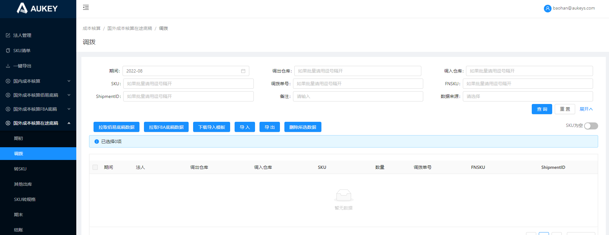

需求文档链接：https://svn.aukeyit.com/svn/Code/aukey-erp/【1】信息技术部软件资产知识库/【7】业财平台/【1】产品资料/成本核算 国外成本核算-在途底稿.rp
原逻辑：1.【拉取佰易底稿数据】【拉取FBA底稿数据】：拉取数据范围为傲基国际有限公司在途底稿当前期间数据；
2.导入：仅限导入法人主体为傲基国际有限公司在途底稿当前期间数据；
3.导入模板：提示：法人：仅限傲基国际有限公司；数量：仅限整数；
4.【删除所选数据】：傲基国际有限公司在途底稿当前期间数据；
现需求改为：1.【拉取佰易底稿数据】【拉取FBA底稿数据】：拉取数据范围为【法人类型】=“国外法人”且【模块类型】=“在途底稿”对应法人当前期间数据；
2.导入：1）校验法人主体是否为【法人管理】页面中【法人类型】=“国外法人”且【模块类型】=“在途底稿”的对应法人数据；2）校验是否为该法人主体所对应的当前期间；其余逻辑不变；
3.导入模板：提示改为：法人：仅限国外法人；数量：仅限整数；
4.页面新增【法人】搜索框：下拉多选，无默认值，选项展示法人管理页面【法人类型】=“国外法人”、【模块类型】=“在途底稿”且【当期期间】不为空的法人主体；
5.【删除所选数据】：按照对应国外法人在途底稿模块的当前期间删除数据；

法人：